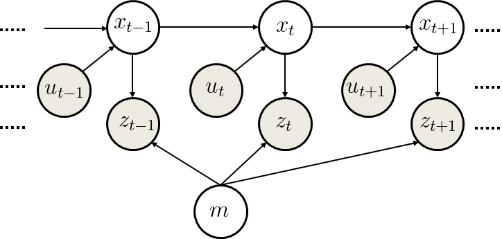

Localization and Tracking
Contents
Localization and Tracking#
In the recursive state estimation section we have seen the formulation of the Bayes filter and its application in a simple problem of trying to maintain a latent (internal to the agent) belief about the state of the environment \(s\) given measurements \(z\) and agent actions \(a\). Here we are closing the loop: we started with the perception system giving us poses of objects it detects, effectively localizing the objects at the pixel coordinate system (within the image). Now we need to use the Bayes filter to localize the object globally as well as to be able to track it, since it can also move across space, so that we can recognize it over time as the same unique object and be able to assign a symbol to it.
In order to localize the object globally we need to localize the agent globally and so we will focus here on a situation where the initial pose of the agent is unknown as it is initially placed somewhere in its environment, but it lacks knowledge of where it is. When we have the global pose of the sensor, for example a camera, we can use straightforward techniques for the global localization of objects e.g. calibrated stereo reconstruction or triangulation, section 14.6.
Even without global localization we can track an object as it moves within the viewpoint of the agent for the sole purpose to predict its subsequent location within the image and assign a local instance identity to it. For example as an agent moves in the space surrounding the object, its perception subsystem makes a memoryless detection decision but its probabilistic reasoning subsystem should stitch such decisions together to reason as to the object’s identity over time: is it the same object that was seen a frame ago? By knowing the pose of the agents sensors (a camera) we should be able to make such inferences.
Localization#
 GPM for localization of mobile agent - notice the map \(m\) is known. In the text we use for states the letter \(s\) instead of \(x\) and for actions the letter \(a\) instead of \(u\).
For localization we are also given a map \(m\) that can take multiple shapes. Most common maps are as shown below:
Map assumed known for agent localization - notice that beliefs may be ambiguous for certain maps and locations
The Bayes filter for the localization problem must consider the map and it becomes:
Bayes Filter for Localization and Tracking
\(\mathtt{bel}(s_t)\) = bayes_filter(\(\mathtt{bel}(s_{t-1}), a_t, z_t, m)\)
for all \(s_t\) do:
\(→ \mathtt{\hat{bel}}(s_t) = \int p(s_t | a_t, s_{t-1}, m) \mathtt{bel}(s_{t-1}) ds_{t-1}\) (prediction)
\(→ \mathtt{bel}(s_t) = \eta p(z_t | s_t, m) \mathtt{\hat{bel}}(s_t)\) (measurement update)
endfor
What distinguishes localization from tracking is that for localization, the initial belief is:
where \(|S|\) is the number of states (poses) that the robot can have.
To illustrate the localization problem solution with probabilistic reasoning lets consider an simple environment with a corridor and three doors.
Example environment for agent localization - a hallway with three identical doors
Our initial belief is obviously uniform \(\mathtt{\hat{bel}}(s_0) = 1 / |S|\) over all poses, as illustrated in row 1.
The agent uses its perception that indicates that it is adjacent to one of the doors, which in effect means that the shape of \(p(z_1 | s_0, m)\) is as shown in the 2nd row.
It multiplies its previous belief with this distribution during measurement update producing the new belief \(\mathtt{bel}(s_1)\) as shown in the 2nd row (black pdf). The resulting belief is multi-modal, reflecting the residual uncertainty of the agent at this point.
As the agent moves to the right, it convolves (the integral in the Bayes filter is a convolution) its belief with the transition (motion) model \(p(s_2 | a_2, s_1)\). It still does not know where it is - all it knows that its belief needs to follow what its odometry sensors told it which is a move to the right by so many meters. The effect is visualized in row 3 that shows a shifted (by the odometric information) and slightly less peaked (movement reduces confidence) belief.
The final measurement update that multiplies \(\mathtt{bel}(s_1)\) with \(p(z_2 | s_2, m)\) results into obtaining a belief \(\mathtt{bel}(s_2)\) where most of the probability mass is focused on the correct pose.
As the agent moves further to the right, the transition (motion) model convolutions reduce the confidence of the agent as the perception system is effectively inactive due to the lack of distinguishing features in its locale.
Tracking#
Just like localization, tracking can refer to location prediction of the agent itself or the objects that the agents perceives in its environment. For tracking we are given the initial pose \(s_0\) that is approximately known. It is common to initialize the belief with a narrow Gaussian distribution around \(\hat{s}_0\).
Lets look at a similar example to the localization problem:
Example environment for tracking - a hallway with three identical and labeled doors
The original belief is a normal distribution centered around door 1 where the agent is initially placed. As the robot moves to the right, its belief is convolved with the Gaussian transition / motion model. The resulting belief is a shifted Gaussian of increased width. Now suppose the robot detects that it is in front of door 2. Folding this measurement probability into the robot’s belief yields the posterior shown in ©. Note that the variance of the resulting belief is smaller than the variances of both the robot’s previous belief and the observation density. This is natural, since integrating two independent estimates should make the robot more certain than each estimate in isolation. After moving down the hallway, the robot’s uncertainty in its position increases again, since the tracker continues to incorporate motion uncertainty into the robot’s belief.